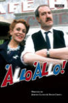
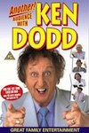
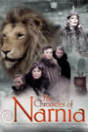
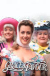
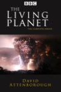
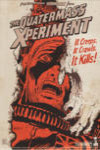

TELEVISION SHOWS
| The 13 Ghosts of Scooby-Doo
Year: 1985 Language: EN Format: mp4 Resolution: 480p Season Count: 1
|
| 1916: The Irish Rebellion
Year: 2016 Language: EN Format: mp3 Resolution: SD Season Count: 1
|
| 2point4 Children
Year: 1991 Language: EN Format: mp4 Resolution: SD Season Count: 8
|
| The ABC Murders
Year: 2018 Language: EN Format: mp4 Resolution: 720p Season Count: 1
|
| Absolutely Fabulous
Year: 1992 Language: EN Format: mp4 Resolution: 480p Season Count: 7
|
| The Addams Family
Year: 1964 Language: EN Format: mp4 Resolution: SD Season Count: 2
|
| Adventure
Year: 1963 Language: EN Format: mp4 Resolution: 576p Season Count: 2
|

| The Adventures of Tintin
Year: 1991 Language: EN Format: mp4 Resolution: 576p Season Count: 1
|
| Africa
Year: 2013 Language: EN Format: mp4 Resolution: 1080p Season Count: 1
|
| Agatha Christie's Partners in Crime
Year: 1983 Language: EN Format: mp4 Resolution: 1080p Season Count: 1
|
| Agatha Christie's Poirot
Year: 1989 Language: EN Format: mp4 Resolution: 1080p Season Count: 13
|
| ALF
Year: 1986 Language: EN Format: mp4 Resolution: SD Season Count: 5
|
|  | 'Allo 'Allo!
Year: 1982 Language: EN Format: mp4 Resolution: 480p Season Count: 9
|
| American Dad!
Year: 2005 Language: EN Format: mp4 Resolution: SD Season Count: 13
|
| Ancient Egypt: Life and Death in the Valley of the Kings
Year: 2013 Language: EN Format: mp4 Resolution: 720p Season Count: 1
|
| And Then There Were None
Year: 2015 Language: EN Format: mp4 Resolution: 1080p Season Count: 1
|

| Angels in America
Year: 2003 Language: EN Format: mp4 Resolution: 720p Season Count: 1
|
| Animal Crime Scene
Year: 2005 Language: EN Format: mp4 Resolution: 720p Season Count: 1
|
|  | Another Audience With Ken Dodd
Year: 2002 Language: Format: mp4 Resolution: 480p Season Count:
|
| Are You Being Served?
Year: 1972 Language: EN Format: mp4 Resolution: 480p Season Count: 11
|

| As Time Goes By
Year: 1992 Language: EN Format: mp4 Resolution: 480p Season Count: 10
|
| Attenborough in Paradise and Other Personal Voyages
Year: 1971 Language: EN Format: mp4 Resolution: 576p Season Count: 1
|

| Attenborough's Life in Colour
Year: 2021 Language: EN Format: mp4 Resolution: 1080p Season Count: 1
|
| Attenborough: 60 Years in the Wild
Year: 2012 Language: EN Format: mp4 Resolution: 720p Season Count: 1
|
| An Audience With Ken Dood
Year: 1994 Language: Format: mp4 Resolution: 576p Season Count:
|
| An Audience With Kenneth Williams
Year: 1983 Language: EN Format: mp4 Resolution: 576p Season Count: 1
|
| Les aventures de Tintin
Year: 1991 Language: FR Format: mp4 Resolution: 480p Season Count: 1
|
| Bagpuss
Year: 1974 Language: EN Format: mp4 Resolution: 576p Season Count: 1
|
| Banana
Year: 2015 Language: EN Format: mp4 Resolution: 576p Season Count: 1
|
| Beautiful People
Year: 2008 Language: EN Format: mp4 Resolution: SD Season Count: 2
|
| Benidorm
Year: 1968 Language: EN Format: mp4 Resolution: 720p Season Count: 11
|
| The Benny Hill Show
Year: 1968 Language: EN Format: mp4 Resolution: 480p Season Count: 20
|

| The Best Of Frankie Howerd
Year: 2023 Language: EN Format: mp4 Resolution: 1080p Season Count: 1
|
| Beyond Paradise
Year: N/A Language: EN Format: mp4 Resolution: 576p Season Count: 3
|
| The Big Bang Theory
Year: 2007 Language: EN Format: mp4 Resolution: 720p Season Count: 12
|
| Big Boys
Year: 2022 Language: EN Format: mp4 Resolution: 1080p Season Count: 3
|
| Blackadder
Year: 1983 Language: EN Format: mp4 Resolution: 720p Season Count: 5
|
| Bless Me Father
Year: 1978 Language: EN Format: mp4 Resolution: 576p Season Count: 3
|
| Bless This House
Year: 1971 Language: EN Format: mp4 Resolution: 480p Season Count: 6
|
| The Blue Planet
Year: 2001 Language: EN Format: mp4 Resolution: 1080p Season Count: 1
|
| Blue Planet II
Year: 2017 Language: EN Format: mp4 Resolution: 720p Season Count: 1
|
| The Borgias
Year: 2011 Language: EN Format: mp4 Resolution: 720p Season Count: 3
|
| The Borgias
Year: 1981 Language: EN Format: mp4 Resolution: 480p Season Count: 1
|
| Brideshead Revisited
Year: 1981 Language: EN Format: mp4 Resolution: 480p Season Count: 1
|
| The Brittas Empire
Year: 1991 Language: EN Format: mp4 Resolution: 480p Season Count: 7
|
| Broadway The American Musical
Year: 2004 Language: EN Format: mp4 Resolution: 480p Season Count: 1
|
| Butterflies
Year: 1978 Language: EN Format: mp4 Resolution: SD Season Count: 5
|
| Carry On Christmas Specials
Year: 1969 Language: EN Format: mp4 Resolution: 720p Season Count: 1
|
| Carry on Laughing
Year: 1970 Language: EN Format: mp4 Resolution: 720p Season Count: 2
|
| Carta a Eva
Year: 2013 Language: EN Format: mp4 Resolution: 720p Season Count: 1
|
|  | The Chronicles of Narnia
Year: 1988 Language: EN Format: mp4 Resolution: 576p Season Count: 3
|
| The Clangers
Year: 1969 Language: EN Format: mp4 Resolution: 480p Season Count: 2
|
| Clarence
Year: 1988 Language: EN Format: mp4 Resolution: SD Season Count: 1
|
| The Cleopatras
Year: 1982 Language: EN Format: mp4 Resolution: 480p Season Count: 1
|
| Come Fly With Me
Year: 2010 Language: EN Format: mp4 Resolution: SD Season Count: 1
|
| Cucumber
Year: 2015 Language: EN Format: mp4 Resolution: SD Season Count: 1
|
| Dad's Army
Year: 1968 Language: EN Format: mp4 Resolution: SD Season Count: 10
|
| Dad's Army: The Lost Episodes
Year: 2019 Language: EN Format: mp4 Resolution: SD Season Count: 1
|
| Dastardly & Muttley in Their Flying Machines
Year: 1969 Language: EN Format: mp4 Resolution: SD Season Count: 1
|
| David Attenborough's Conquest of the Skies
Year: 2015 Language: EN Format: mp4 Resolution: 720p Season Count: 1
|
| David Attenborough's Natural Curiosities
Year: 2013 Language: EN Format: mp4 Resolution: 720p Season Count: 4
|
| David Attenborough's Rise of Animals: Triumph of the Vertebrates
Year: 2013 Language: EN Format: mp4 Resolution: 720p Season Count: 1
|
| David Attenborough's Wild City
Year: 2016 Language: EN Format: mp4 Resolution: 1080p Season Count: 1
|
| Dear Ladies
Year: 1983 Language: EN Format: mp4 Resolution: 576p Season Count: 3
|
| Death In Paradise
Year: 2011 Language: EN Format: mp4 Resolution: 720p Season Count: 14
|
| Desmond's
Year: 1989 Language: EN Format: mp4 Resolution: 480p Season Count: 6
|
| dinnerladies
Year: 1998 Language: EN Format: mp4 Resolution: SD Season Count: 2
|
| The Doctor Blake Mysteries
Year: 2013 Language: EN Format: mp4 Resolution: SD Season Count: 4
|
| Doctor Who
Year: 1963 Language: EN Format: mp4 Resolution: 480p Season Count: 27
|

| Doctor Who
Year: 2005 Language: EN Format: mp4 Resolution: 720p Season Count: 14
|
| Doctor Who Confidential
Year: 2005 Language: EN Format: mp4 Resolution: 720p Season Count: 8
|

| Doctor Who Extra
Year: 2014 Language: EN Format: mp4 Resolution: 10800p Season Count: 3
|
| Doctor Who Closer Look
Year: 2018 Language: EN Format: mp4 Resolution: 720p Season Count: 3
|
| Don't Drink The Water
Year: 1974 Language: EN Format: mp4 Resolution: 576p Season Count: 2
|
| Dynasties
Year: 2018 Language: EN Format: mp4 Resolution: 1080p Season Count: 2
|
| Egypt
Year: 2005 Language: EN Format: mp4 Resolution: SD Season Count: 1
|
| Egypt Unwrapped
Year: 2008 Language: EN Format: mp4 Resolution: 720p Season Count: 1
|
| The Fall and Rise of Reginald Perrin
Year: 1976 Language: EN Format: mp4 Resolution: 480p Season Count: 3
|
| Fall of Eagles
Year: 1974 Language: EN Format: mp4 Resolution: SD Season Count: 1
|

| Family Guy
Year: 1995 Language: EN Format: mp4 Resolution: 576p Season Count: 20
|
| Father Brown
Year: 1974 Language: EN Format: mp4 Resolution: 480p Season Count: 1
|
| Father Brown
Year: 2013 Language: EN Format: mp4 Resolution: 720p/ 1080p Season Count: 12
|
| Father Ted
Year: 1995 Language: EN Format: mp4 Resolution: 480p Season Count: 4
|

| Fawlty Towers
Year: 2023 Language: EN Format: mp4 Resolution: 720p Season Count: 2
|
| Fellow Travellers
Year: 1975 Language: EN Format: mp4 Resolution: 720p Season Count: 1
|
| A Fine Romance
Year: 1981 Language: EN Format: mp4 Resolution: 480p Season Count: 4
|
| The First Eden
Year: 1987 Language: EN Format: mp4 Resolution: 576p Season Count: 1
|
| First Life with David Attenborough
Year: 2010 Language: EN Format: mp4 Resolution: 720p Season Count: 1
|
| The Flash Gordon Serials
Year: 1936 Language: EN Format: mp4 Resolution: 480p Season Count: 3
|
| The Flintstones
Year: 1959 Language: EN Format: mp4 Resolution: 480p Season Count: 6
|
| Frankenstein
Year: 2004 Language: EN Format: mp4 Resolution: 720p Season Count: 1
|
| Frozen Planet
Year: 2011 Language: EN Format: mp4 Resolution: 1080p Season Count: 1
|
| Frozen Planet II
Year: 2022 Language: EN Format: mp4 Resolution: 1080p Season Count: 1
|
| Futurama
Year: 1999 Language: EN Format: mp4 Resolution: 720p Season Count: 7
|
| Galapagos with David Attenborough
Year: 2013 Language: EN Format: mp4 Resolution: 720p Season Count: 1
|
| Game of Thrones
Year: 2010 Language: EN Format: mp4 Resolution: 1080p Season Count: 8
|
| George and Mildred
Year: 1976 Language: EN Format: mp4 Resolution: 480p Season Count: 5
|
| Gimme Gimme Gimme
Year: 1999 Language: EN Format: mp4 Resolution: 480p Season Count: 3
|
| Going Straight
Year: 1978 Language: EN Format: mp4 Resolution: SD Season Count: 1
|
| The Golden Girls
Year: 1985 Language: EN Format: mp4 Resolution: SD Season Count: 7
|
| The Golden Palace
Year: 1992 Language: EN Format: mp4 Resolution: 480p Season Count: 1
|
| Good Omens
Year: 1992 Language: EN Format: mp4 Resolution: 1080p Season Count: 2
|
|  | Grace & Favour
Year: 1992 Language: EN Format: mp4 Resolution: 480p Season Count: 2
|
| Great Barrier Reef
Year: 2012 Language: EN Format: mp4 Resolution: 1080p Season Count: 1
|
| The Great Egyptians
Year: 1998 Language: EN Format: mp4 Resolution: 576p Season Count: 1
|
| The Great Rift: Africa's Wild Heart
Year: 2010 Language: EN Format: mp4 Resolution: 720p Season Count: 1
|
| The Green Planet
Year: 2022 Language: EN Format: mp4 Resolution: 1080p Season Count: 1
|
| Hallelujah!
Year: 1983 Language: EN Format: mp4 Resolution: 480p Season Count: 2
|

| Hammer House of Horror
Year: 1952 Language: EN Format: mp4 Resolution: SD Season Count: 1
|
| Hark at Barker
Year: 1969 Language: EN Format: mp4 Resolution: 576p Season Count: 2
|
| Heartstopper
Year: 2022 Language: EN Format: mp4 Resolution: 1080p Season Count: 3
|
| Help! It's the Hair Bear Bunch
Year: 1971 Language: EN Format: mp4 Resolution: SD Season Count: 1
|
| Hi-de-Hi!
Year: 1980 Language: EN Format: mp4 Resolution: SD Season Count: 9
|
| The Hidden History of Egypt & Rome
Year: 2007 Language: EN Format: mp4 Resolution: 576p Season Count: 1
|
| The High Life
Year: 1994 Language: EN Format: mp4 Resolution: 576p Season Count: 2
|
| Hong Kong Phooey
Year: 1974 Language: EN Format: mp4 Resolution: SD Season Count: 1
|
| Hot in Cleveland
Year: 2010 Language: EN Format: mp4 Resolution: 1080p Season Count: 6
|
| The Hound of the Baskervilles
Year: 1982 Language: EN Format: mp4 Resolution: 480p Season Count: 1
|
| House of Cards
Year: 1990 Language: EN Format: mp4 Resolution: 480p Season Count: 3
|
| The Huckleberry Hound Show
Year: 1958 Language: EN Format: mp4 Resolution: 480p Season Count: 4
|
| Human Planet
Year: 2011 Language: EN Format: mp4 Resolution: 720p Season Count: 1
|
| Human Universe
Year: 2014 Language: EN Format: mp4 Resolution: 720p Season Count: 1
|
| The Hunt
Year: 2015 Language: EN Format: mp4 Resolution: 720p Season Count: 1
|
| I, Claudius
Year: 1976 Language: EN Format: mp4 Resolution: 576p Season Count: 1
|
| Immortal Egypt with Joann Fletcher
Year: 2016 Language: EN Format: mp4 Resolution: 720p Season Count: 1
|
| In Loving Memory
Year: 1979 Language: EN Format: mp4 Resolution: 480p Season Count: 6
|
| The Inca: Masters of the Clouds
Year: 2015 Language: EN Format: mp4 Resolution: 720p Season Count: 1
|
| It Ain't Half Hot Mum
Year: 1974 Language: EN Format: mp4 Resolution: 480p Season Count: 8
|
| It’s a Sin
Year: 2021 Language: EN Format: mp4 Resolution: 720p Season Count: 1
|
| Jack the Ripper
Year: 1988 Language: EN Format: mp4 Resolution: 1080p Season Count: 1
|
| Jam and Jerusalem
Year: 2006 Language: EN Format: mp4 Resolution: SD Season Count: 3
|
| Jesus: Rise to Power
Year: 2013 Language: EN Format: mp4 Resolution: SD Season Count: 1
|
| The Job Lot
Year: 2013 Language: EN Format: mp4 Resolution: SD Season Count: 3
|
| Keeping Up Appearances
Year: 1990 Language: EN Format: mp4 Resolution: 576p Season Count: 6
|
| Ken Dodd: Live Laughter Tour
Year: N/A Language: EN Format: mp4 Resolution: 576p Season Count: 1
|
| Kingdom of Plants
Year: 2012 Language: EN Format: mp4 Resolution: 720p Season Count: 1
|
| Let Them Eat Cake
Year: 1999 Language: EN Format: mp4 Resolution: 576p Season Count: 1
|
| Life
Year: 2009 Language: EN Format: mp4 Resolution: 1080p Season Count: 1
|
| Life in Cold Blood
Year: 2008 Language: EN Format: mp4 Resolution: 576p Season Count: 1
|
| Life in the Freezer
Year: 1993 Language: EN Format: mp4 Resolution: 576p Season Count: 1
|
| Life in the Undergrowth
Year: 2005 Language: EN Format: mp4 Resolution: 576p Season Count: 1
|
| The Life of Birds
Year: 1998 Language: EN Format: mp4 Resolution: 576p Season Count: 1
|
| The Life of Mammals
Year: 2002 Language: EN Format: mp4 Resolution: 720p Season Count: 1
|
| Life on Earth
Year: 1979 Language: EN Format: mp4 Resolution: 720p Season Count: 1
|
| Life Story
Year: 2014 Language: EN Format: mp4 Resolution: 720p Season Count: 1
|
| Little Britain
Year: 2003 Language: EN Format: mp4 Resolution: 576p Season Count: 4
|
| Little Britain USA
Year: 2008 Language: EN Format: mp4 Resolution: SD Season Count: 1
|
|  | The Living Planet
Year: 1984 Language: EN Format: mp4 Resolution: 576p Season Count: 1
|
| London Spy
Year: 2015 Language: EN Format: mp4 Resolution: 1080p Season Count: 1
|

| Lost Kingdoms of Central America
Year: 2014 Language: EN Format: mp4 Resolution: 720p Season Count: 1
|
| Lost Kingdoms of South America
Year: 2013 Language: EN Format: mp4 Resolution: 720p Season Count: 1
|
| Lost Worlds, Vanished Lives
Year: 1989 Language: EN Format: mp4 Resolution: 576p Season Count: 1
|
| Love Thy Neighbour
Year: 2020 Language: EN Format: mp4 Resolution: 1080p Season Count: 8
|
| Love, Victor
Year: 1972 Language: EN Format: mp4 Resolution: 1080p Season Count: 3
|
| Madagascar
Year: 2011 Language: EN Format: mp4 Resolution: 720p Season Count: 1
|
| The Magnificent Evans
Year: 1984 Language: EN Format: mp4 Resolution: SD Season Count: 1
|
| Man About the House
Year: 1973 Language: EN Format: mp4 Resolution: SD Season Count: 6
|
| Masters of the Pacific Coast: The Tribes of the American Northwest
Year: 2016 Language: EN Format: mp4 Resolution: 1080p Season Count: 1
|
| The Mating Game
Year: 2021 Language: EN Format: mp4 Resolution: 1080p Season Count: 1
|
| Merlin
Year: 2008 Language: EN Format: mp4 Resolution: SD Season Count: 5
|
| Micro Monsters with David Attenborough
Year: 2013 Language: EN Format: mp4 Resolution: 720p Season Count: 1
|

| Midsomer Murders
Year: 1997 Language: EN Format: mp4 Resolution: 480p / 720p Season Count: 24
|
| The Miracle of Bali
Year: 1969 Language: EN Format: mp4 Resolution: 576p Season Count: 1
|
| Miracle Workers
Year: 2019 Language: EN Format: mp4 Resolution: 1080p Season Count: 3
|
| Miss Marple
Year: 1984 Language: EN Format: mp4 Resolution: 720p Season Count: 1
|
| Moby Dick
Year: 1998 Language: EN Format: mp4 Resolution: 480p Season Count: 1
|
| Moby Dick
Year: 2011 Language: EN Format: mp4 Resolution: 1080p Season Count: 1
|
| Monster: The Jeffrey Dahmer Story
Year: 2022 Language: EN Format: mp4 Resolution: 720p Season Count: 1
|
| Monty Python's Flying Circus
Year: 1969 Language: EN Format: mp4 Resolution: 480p Season Count: 4
|
| Monty Python's Personal Best
Year: 2006 Language: EN Format: mp4 Resolution: 480p Season Count: 1
|
| Mr. Pickles
Year: 2013 Language: EN Format: mp4 Resolution: 1080p Season Count: 3
|
| Mrs Brown's Boys
Year: 2011 Language: EN Format: mp4 Resolution: SD Season Count: 4
|
| Mrs Brown's Boys: The Original Series
Year: 2006 Language: EN Format: mp4 Resolution: SD Season Count: 1
|
| Mrs Brown's Boys: The Live Tours
Year: 2011 Language: EN Format: mp4 Resolution: SD Season Count: 1
|
| The Munsters
Year: 1964 Language: EN Format: mp4 Resolution: 720p Season Count: 3
|
| Mysterious Island
Year: 2005 Language: EN Format: mp4 Resolution: 1080p Season Count: 1
|
| Nature's Great Events
Year: 2009 Language: EN Format: mp4 Resolution: 720p Season Count: 1
|
| Nearest and Dearest
Year: 1968 Language: EN Format: mp4 Resolution: 480p Season Count: 7
|
| The New Pope
Year: 2020 Language: EN Format: mp4 Resolution: 1080p Season Count: 1
|

| The New Scooby-Doo Movies
Year: 1972 Language: EN Format: mp4 Resolution: 480p Season Count: 2
|
| Not on Your Nellie
Year: 1973 Language: EN Format: mp4 Resolution: 480p Season Count: 3
|
| Odd Man Out
Year: 1977 Language: EN Format: mp4 Resolution: 480p Season Count: 1
|
| Oh No It's Selwyn Froggitt
Year: 1974 Language: EN Format: mp4 Resolution: 576p Season Count: 3
|
| Oh, Doctor Beeching
Year: Language: EN Format: mp4 Resolution: 480p Season Count: 3
|
| On the Buses
Year: 1969 Language: EN Format: mp4 Resolution: 576p Season Count: 7
|
| One Foot in the Grave
Year: 1990 Language: EN Format: mp4 Resolution: 480p Season Count: 7
|
| Only Fools and Horses
Year: 1981 Language: EN Format: mp4 Resolution: 576p Season Count: 8
|
| Open All Hours
Year: 1973 Language: EN Format: mp4 Resolution: SD Season Count: 4
|
| Ordeal by Innocence
Year: 2018 Language: EN Format: mp4 Resolution: 720p Season Count: 1
|
| Our Flag Means Death
Year: 2019 Language: EN Format: mp4 Resolution: 1080p Season Count: 2
|
| Our Planet
Year: 1976 Language: EN Format: mp4 Resolution: 1080p Season Count: 2
|
| Paddington
Year: 2020 Language: EN Format: mp4 Resolution: 480p Season Count: 1
|
| The Pale Horse
Year: 2014 Language: EN Format: mp4 Resolution: 1080p Season Count: 1
|
| Penny Dreadful
Year: 1960 Language: EN Format: mp4 Resolution: 1080p Season Count: 3
|
| The People of Paradise
Year: 2021 Language: EN Format: mp4 Resolution: 480p Season Count: 1
|
| A Perfect Planet
Year: 1969 Language: EN Format: mp4 Resolution: 1080p Season Count: 1
|
| The Perils of Penelope Pitstop
Year: 1964 Language: EN Format: mp4 Resolution: 480p Season Count: 1
|
| The Pink Panther
Year: 2005 Language: EN Format: mp4 Resolution: 480p Season Count: 4
|
| Planet Earth
Year: 2016 Language: EN Format: mp4 Resolution: 1080p Season Count: 1
|
| Planet Earth II
Year: 2006 Language: EN Format: mp4 Resolution: 1080p Season Count: 1
|

| Planet Earth III
Year: 2024 Language: EN Format: mp4 Resolution: 1080p Season Count: 1
|
| Planet Earth: The Future
Year: 2017 Language: EN Format: mp4 Resolution: 576p Season Count: 1
|
| Plants Behaving Badly
Year: 1968 Language: EN Format: mp4 Resolution: 480p Season Count: 1
|
| Please Sir
Year: 1982 Language: EN Format: mp4 Resolution: 480p Season Count: 4
|
| Police Squad!
Year: 1973 Language: EN Format: mp4 Resolution: SD Season Count: 1
|
| Porridge
Year: 1979 Language: EN Format: mp4 Resolution: SD Season Count: 4
|
| Prehistoric Planet
Year: 2002 Language: EN Format: mp4 Resolution: 1080p Season Count: 2
|
| Prisoner: Cell Block H
Year: 1995 Language: EN Format: mp4 Resolution: SD Season Count: 8
|
| The Private Life of Plants
Year: 1958 Language: EN Format: mp4 Resolution: 576p Season Count: 1
|
| Quatermass
Year: 1979 Language: EN Format: mp4 Resolution: 480p Season Count: 1
|
| Quatermass and the Pit
Year: 1953 Language: EN Format: mp4 Resolution: 480p Season Count: 1
|
|  | The Quatermass Experiment
Year: 1955 Language: EN Format: mp4 Resolution: 480p Season Count: 1
|
| Quatermass II
Year: 1999 Language: EN Format: mp4 Resolution: 480p Season Count: 1
|
| Queer as Folk
Year: 2000 Language: EN Format: mp4 Resolution: 576p Season Count: 2
|
| Queer As Folk
Year: 2017 Language: EN Format: mp4 Resolution: 576p Season Count: 5
|
| Queers
Year: N/A Language: EN Format: mp4 Resolution: 720p Season Count: 1
|
| Rev.
Year: 1974 Language: EN Format: mp4 Resolution: 1080p Season Count: 3
|
| Ripping Yarns
Year: 1976 Language: EN Format: mp4 Resolution: 576p Season Count: 3
|
| Rising Damp
Year: 2005 Language: EN Format: mp4 Resolution: 576p Season Count: 4
|
| Rome
Year: 1998 Language: EN Format: mp4 Resolution: 1080p Season Count: 2
|
| The Royle Family
Year: 1978 Language: EN Format: mp4 Resolution: 480p Season Count: 4
|
| Rumpole of the Bailey
Year: 2022 Language: EN Format: mp4 Resolution: 576p Season Count: 8
|
| Santa Evita
Year: 2007 Language: EN Format: mp4 Resolution: 720p Season Count: 1
|
| The Sarah Jane Adventures
Year: 2015 Language: EN Format: mp4 Resolution: SD Season Count: 5
|
| Schitt's Creek
Year: 1979 Language: EN Format: mp4 Resolution: 720p Season Count: 7
|
| Scooby-Doo and Scrappy-Doo
Year: 1976 Language: EN Format: mp4 Resolution: SD Season Count: 6
|
| The Scooby-Doo Show
Year: 2009 Language: EN Format: mp4 Resolution: 480p Season Count: 3
|
| Scooby-Doo! Mystery Incorporated
Year: 1969 Language: EN Format: mp4 Resolution: SD Season Count: 2
|
| Scooby-Doo, Where Are You!
Year: 2021 Language: EN Format: mp4 Resolution: 480p Season Count: 3
|
| Secrets of the Krays
Year: 2012 Language: EN Format: mp4 Resolution: 480p Season Count: 1
|
| Secrets of Wild India
Year: 2006 Language: EN Format: mp4 Resolution: 1080p Season Count: 1
|
| See No Evil: The Moors Murders
Year: 1973 Language: EN Format: mp4 Resolution: SD Season Count: 1
|
| Seven of One
Year: 2018 Language: EN Format: mp4 Resolution: SD Season Count: 1
|
| Seven Worlds, One Planet
Year: 2019 Language: EN Format: mp4 Resolution: 1080p Season Count: 1
|
| Sex Education
Year: 2015 Language: EN Format: mp4 Resolution: mp4 Season Count: 4
|
| Shark
Year: 2010 Language: EN Format: mp4 Resolution: SD Season Count: 1
|
| Sherlock
Year: 1984 Language: EN Format: mp4 Resolution: SD Season Count: 5
|
| Sherlock Holmes
Year: 1971 Language: EN Format: mp4 Resolution: 480/td> Season Count: 3
|
| Sherlock Holmes
Year: 1987 Language: EN Format: mp4 Resolution: 720p Season Count: 7
|
| The Simpsons
Year: 1964 Language: EN Format: mp4 Resolution: 720p Season Count: 32
|
| Sister Boniface Mysteries
Year: 2022 Language: EN Format: mp4 Resolution: 720p Season Count: 4
|
| Six Dates with Barker
Year: 1982 Language: EN Format: mp4 Resolution: 576p Season Count: 1
|
| Smiley's People
Year: 1961 Language: EN Format: mp4 Resolution: 720p Season Count: 1
|
| Snagglepuss
Year: 1973 Language: EN Format: mp4 Resolution: 480p Season Count: 2
|
| Some Mothers Do 'Ave 'Em
Year: 1981 Language: EN Format: mp4 Resolution: 576p Season Count: 4
|
| Sorry!
Year: 1974 Language: EN Format: mp4 Resolution: 480p Season Count: 7
|
| Spartacus
Year: 2010 Language: EN Format: mp4 Resolution: 1080p Season Count: 4 |
| Space: 1999
Year: 1966 Language: EN Format: mp4 Resolution: SD Season Count: 2
|
| Star Trek
Year: 1993 Language: EN Format: mp4 Resolution: 720p Season Count: 4
|
| Star Trek: Deep Space Nine
Year: 2017 Language: EN Format: mp4 Resolution: 480p Season Count: 7
|
| Star Trek: Discovery
Year: 2001 Language: EN Format: mp4 Resolution: 720p Season Count: 5
|
| Star Trek: Enterprise
Year: 2001 Language: EN Format: mp4 Resolution: SD Season Count: 4
|
| Star Trek: Picard
Year: 2001 Language: EN Format: mp4 Resolution: 1080p Season Count: 3
|
| Star Trek: Strange New Worlds
Year: 1973 Language: EN Format: mp4 Resolution: 1080p Season Count: 2
|
| Star Trek: The Animated Series
Year: 1987 Language: EN Format: mp4 Resolution: 1080p Season Count: 2
|
| Star Trek: The Next Generation
Year: 1995 Language: EN Format: mp4 Resolution: 1080p Season Count: 7
|
| Star Trek: Voyager
Year: 2000 Language: EN Format: mp4 Resolution: SD Season Count: 7
|
| State of the Planet
Year: 2013 Language: EN Format: mp4 Resolution: 576p Season Count: 1
|
| Stephen Fry: Out There
Year: 1962 Language: EN Format: mp4 Resolution: 720p Season Count: 1
|
| Steptoe and Son
Year: 2013 Language: EN Format: mp4 Resolution: 480p Season Count: 9
|
| Still Open All Hours
Year: 2017 Language: EN Format: mp4 Resolution: SD Season Count: 3
|

| Taboo
Year: 1994 Language: EN Format: mp4 Resolution: 1080p Season Count: 1
|
| Tales of the City
Year: 1979 Language: EN Format: mp4 Resolution: 480p Season Count: 3
|
| Tales of the Unexpected
Year: 1993 Language: EN Format: mp4 Resolution: SD Season Count: 9
|

| Terry and Julian
Year: 1993 Language: EN Format: mp4 Resolution: 480p Season Count: 1
|
| Then Churchill Said to Me
Year: 1995 Language: EN Format: mp4 Resolution: 576p Season Count: 1
|
| The Thin Blue Line
Year: 2022 Language: EN Format: mp4 Resolution: SD Season Count: 2
|
| This Is Going to Hurt
Year: 1996 Language: EN Format: mp4 Resolution: 1080p Season Count: 1
|
| This Life
Year: 1979 Language: EN Format: mp4 Resolution: 480p Season Count: 3
|
| Tinker, Tailor, Soldier, Spy
Year: 1979 Language: EN Format: mp4 Resolution: 720p Season Count: 1
|
| To the Manor Born
Year: 1961 Language: EN Format: mp4 Resolution: 576p Season Count: 3
|
| Top Cat
Year: 2006 Language: EN Format: mp4 Resolution: 480p Season Count: 1
|
| Torchwood
Year: 1990 Language: EN Format: mp4 Resolution: 720p Season Count: 4
|
| The Trials of Life
Year: 1975 Language: EN Format: mp4 Resolution: 576p Season Count: 1
|
| The Tribal Eye
Year: 2006 Language: EN Format: mp4 Resolution: 576p Season Count: 1
|
| The Truth About Climate Change
Year: 2007 Language: EN Format: mp4 Resolution: 576p Season Count: 1
|

| The Tudors
Year: 2001 Language: EN Format: mp4 Resolution: 720p Season Count: 4
|
| Two Pints of Lager and a Packet of Crisps
Year: 1971 Language: EN Format: mp4 Resolution: SD Season Count: 10
|
| The Two Ronnies
Year: 1975 Language: EN Format: mp4 Resolution: 576p Season Count: 13
|
| Two's Company
Year: 1969 Language: EN Format: mp4 Resolution: 576p Season Count: 4
|
| Up Pompeii
Year: 2011 Language: EN Format: mp4 Resolution: 480p Season Count: 3
|
| Vera
Year: Language: EN Format: mp4 Resolution: 720p/1080p Season Count: 15
|
| A Very English Scandal
Year: 2018 Language: EN Format: mp4 Resolution: 720p Season Count: 1
|
| The Vicar of Dibley
Year: 1994 Language: EN Format: mp4 Resolution: 576p Season Count: 4
|

| Vicious
Year: 2013 Language: EN Format: mp4 Resolution: SD Season Count: 3
|
| Victoria Wood As Seen On TV
Year: 1985 Language: EN Format: mp4 Resolution: 576p Season Count: 2
|
| Wacky Races
Year: 1968 Language: EN Format: mp4 Resolution: 480p Season Count: 1
|
| Waiting for God
Year: 1990 Language: EN Format: mp4 Resolution: 480p Season Count: 6
|
| What's New Scooby-Doo?
Year: 2002 Language: EN Format: mp4 Resolution: SD Season Count: 3
|
| Whoops Apocalypse
Year: 1982 Language: EN Format: mp4 Resolution: 576p Season Count: 1
|
| Wild Brazil
Year: 2014 Language: EN Format: mp4 Resolution: 720p Season Count: 1
|
| Wild China
Year: 2008 Language: EN Format: mp4 Resolution: 720p Season Count: 1
|
| Willo the Wisp
Year: 1975 Language: EN Format: mp4 Resolution: 480p Season Count: 1
|
| The Windsors
Year: 2016 Language: EN Format: mp4 Resolution: SD Season Count: 4
|
| The Witness for the Prosecution
Year: 2016 Language: EN Format: mp4 Resolution: SD Season Count: 1
|
| The Wombles
Year: 1973 Language: EN Format: mp4 Resolution: 720p Season Count: 2
|
| Years and Years
Year: 2019 Language: EN Format: mp4 Resolution: 1080p Season Count: 1
|
| Yes Minister
Year: 1980 Language: EN Format: mp4 Resolution: 576p Season Count: 4
|
| Yes, Prime Minister
Year: 1986 Language: EN Format: mp4 Resolution: 480p Season Count: 2
|
| The Yogi Bear Show
Year: 1958 Language: EN Format: mp4 Resolution: 480p Season Count: 3
|
| You Rang M'Lord?
Year: 1990 Language: EN Format: mp4 Resolution: 480p Season Count: 5
|
| You're Only Young Twice
Year: 1977 Language: EN Format: mp4 Resolution: 576p Season Count: 4
|
| The Young Offenders
Year: 2016 Language: EN Format: mp4 Resolution: 720p Season Count: 4
|
| The Young Pope
Year: 2016 Language: EN Format: mp4 Resolution: 720p Season Count: 2
|
| Young Royals
Year: 2019 Language: SV Format: mp4 Resolution: 1080p Season Count: 3
|
| Zorro
Year: 1957 Language: EN Format: mp4 Resolution: 480p Season Count: 3
|
| 水滸伝
Year: 1976 Language: EN Format: mp4 Resolution: 576p Season Count: 2
|
| 西遊記
Year: 1978 Language: EN Format: mp4 Resolution: 576p Season Count: 2
|